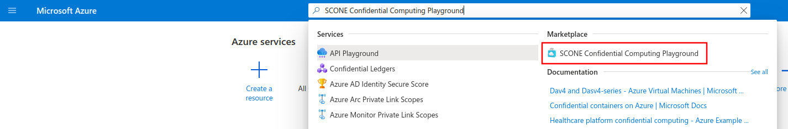
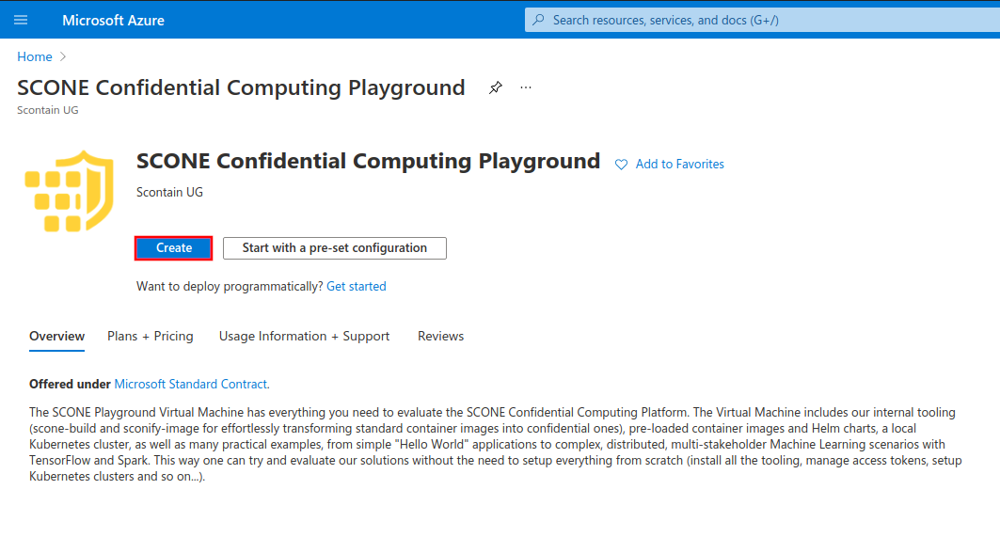
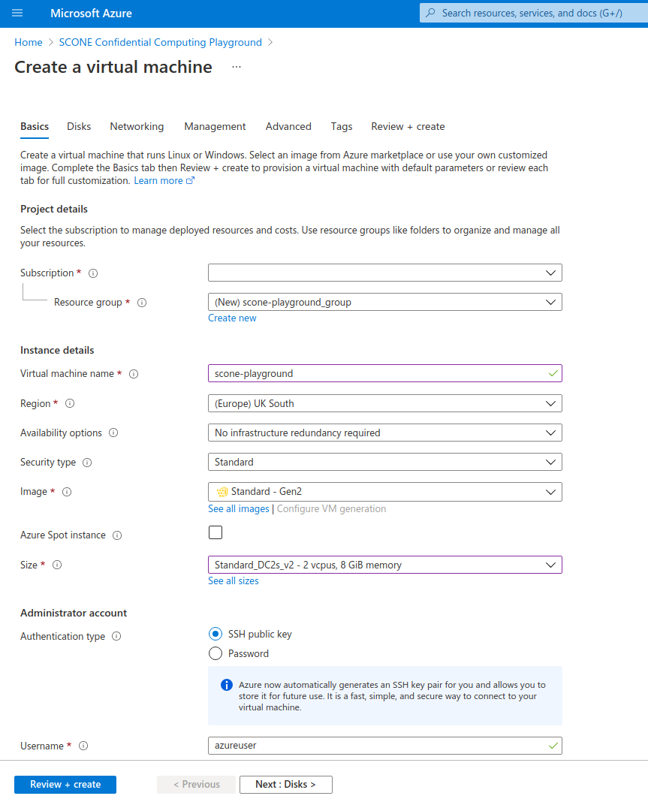
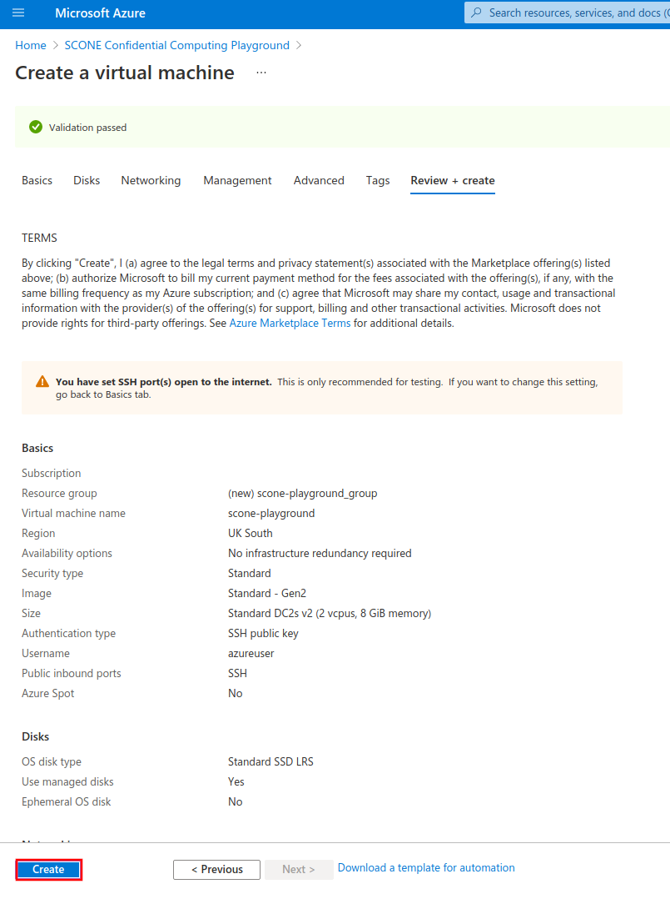
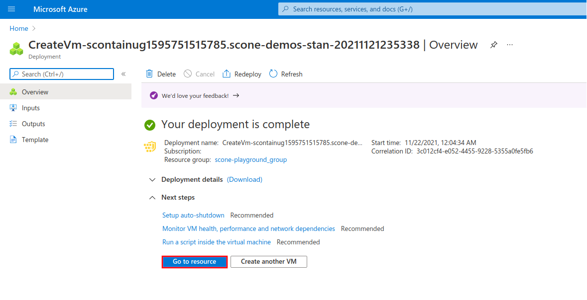
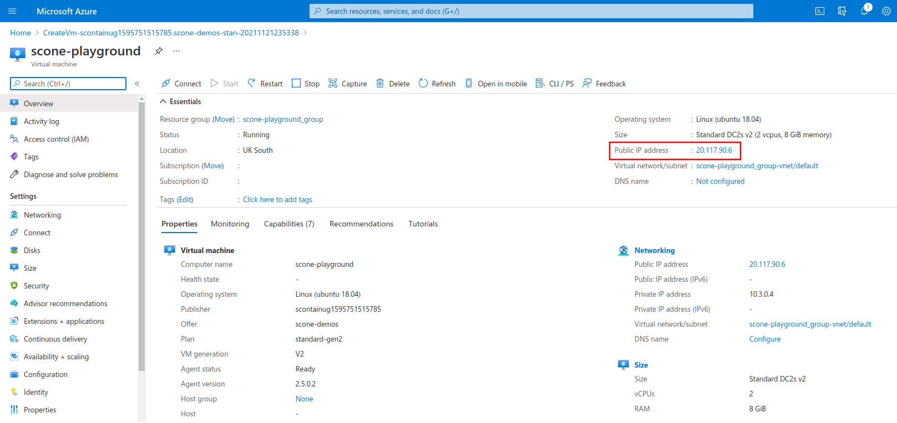

SCONE Playground Virtual Machine
| Last updated | Virtual machine version |
|---|---|
| December 29th, 2021 | 5.6.2 |
The SCONE Confidential Computing Playground Virtual Machine is one of the Azure Marketplace offers by Scontain. Its goal is to provide an easy starting point for evaluating the SCONE Confidential Computing Platform. It includes all the needed tools for building confidential images (from scratch or from an existing native image) and deploying them, e.g.:
docker,docker-compose,minikube,helmscone-buildandsconify_imagefor transforming existing images into confidential images with little-to-no modification required- container images for our Remote Attestation Services (LAS and CAS), as well as many of our curated images
- charts from our SconeApps Helm chart repository
The virtual machine also includes many examples and demos of the SCONE platform that you can run yourself. From simple Hello World Python applications to complex, multi-stakeholder Machine Learning scenarios with TensorFlow.
Quickstart
To get started, search for "SCONE Confidential Computing Playground" in the Azure Portal search bar and select our offer under "Marketplace" section:

Click on "Create" button:

Configure your Virtual Machine according to your needs. Choose a size from families DCsv2-series (Coffee Lake processors), DCsv3-series or DCdsv3-series (Ice Lake processors) to have Intel SGX enabled on your Virtual Machine. Setup user access through password or SSH keys.

Once you configured your VM, click on "Review + create" button and to review and validate your configuration. Click on "Create" once validation is finished.

After the deployment process is complete, click on "Go to resource" to see your newly-created VM.

Copy the IP address of your VM under the field "Public IP address".

You can use this IP to login to your VM through SSH, using the authentication method that you choose on the configuration step.
ssh azureuser@20.117.90.4
Once you're logged in to the Virtual Machine, you're good to go!
azureuser@scone-playground:~$ echo "Have fun! :-)"
Demos and examples
Please check all the demos and their respective instructions below.
- scone-build: Transform a native Python image into a confidential image and deploy it to Kubernetes. Learn more in our CC University video.
- Confidential service meshes: Transparent encryption (truly end-to-end mTLS) of network communications. Learn more in our CC University video.
- Multi-stakeholder workflow: Have multiple different partners collaborating whilst protecting their intellectual property (code, data) from each other and from cluster administrators. Learn more in our CC University video or at the official documentation.
- Multi-stakeholder Machile Learning workflow: Have multiple different partners collaborating in a TensorFlow workflow whilst protecting their intellectual property (code, data) from each other and from cluster administrators. Learn more in our CC University video.
scone-build
| Memory requirement | Location |
|---|---|
| 8 GB | /opt/scone/demos/scone-build |
scone-build builds confidential container images from existing native images in one step. The resulting image runs on remotely-attested Intel SGX enclaves and has an encrypted filesystem. Security policies for remote attestation and deployment manifests for Kubernetes and Helm are automatically generated.
Run yourself
- Name and build the native image.
# Change the image name.
# You need push access to the selected registry.
export NATIVE_IMAGE=registry.scontain.com:5050/clenimar/scone-build-demo/hello-world-python:0.1-native
# Build and push.
cd /opt/scone/demos/hello-world-python/hello-world-python-image
docker build . -t $NATIVE_IMAGE
docker push $NATIVE_IMAGE
- Specify your target image.
# Change the image name.
# You need push access to the selected registry if
# `imagePushPolicy` is set to "Always".
export TARGET_IMAGE=registry.scontain.com:5050/clenimar/scone-build-demo/hello-world-python:0.1-confidential
- Specify your CAS namespace.
export NAMESPACE=hello-world-$RANDOM$RANDOM
- Move to scone-build samples repository and replace the image names.
cd /opt/scone/demos/scone_build/examples/hello-world-python
-
Edit
Sconefile. -
Set
fromto$NATIVE_IMAGE. - Set
toto$TARGET_IMAGE. -
Set
policy.namespace.nameto$NAMESPACE. -
Create an identity with scone-identity.
# Setup ~/.rnd
dd if=/dev/urandom of=~/.rnd bs=256 count=1
scone-identity
This will produce identity.pem in your local directory.
- Run
scone-build.
scone-build -b ./build-resources
- Wait for it to finish. Now start the local Kubernetes cluster (if not already):
minikube start
# Install the SCONE SGX device plugin and SCONE LAS.
helm install sgxdevplugin /opt/scone/sconeapps/sgxdevplugin-1.2.0.tgz
helm install las /opt/scone/sconeapps/las-0.3.4.tgz
- Install the generated Helm chart.
sudo chmod -R 777 charts
helm install hello-world-scone charts/service
You might want to configure additional parameters for the Helm chart. For example, if $TARGET_IMAGE belongs to a private registry, you must specify an Image Pull Secret, by adding --set imagePullSecrets[0].name=$secretName to the helm install line... Check the chart docs (cat charts/service/README.md) to see all supported parameters.
- Make sure your "Hello, World" application has run successfully. Get the pod name:
kubectl get pods | grep hello-world
- Then get its logs. For example:
# Change the name of the pod to match yours.
$ kubectl logs hello-world-scone-sconify-service--1-2cds8 -f
Hello World!
Confidential service meshes
| Memory requirement | Location |
|---|---|
| 8 GB | /opt/scone/demos/flask_example |
Showcase the Network Shield feature of the SCONE runtime, which allows for a) transparently encrypting the network communication of applications running on SCONE, much like a built-in, secure service mesh sidecar that enables truly end-to-end mTLS protection; and b) transparently blocking any unwated inbound or outbound connections according to your security policy (built-in application firewall).
Run yourself
- Move to repository.
cd /opt/scone/demos/flask_example
- Define image names and your CAS namespace:
# NOTE: change the image names. Set a repository that you can push images to. If you set
# a private repo, don't forget to set imagePullSecrets when deploying the Helm chart.
export SERVER_IMAGE="registry.scontain.com:5050/clenimar/network-shield-demo/flask-restapi:0.1"
export CLIENT_IMAGE="registry.scontain.com:5050/clenimar/network-shield-demo/client:0.1"
# choose a random CAS namespace for this tutorial.
export NAMESPACE="network-shield-demo-""$RANDOM""$RANDOM"
- Create the confidential image for the server. Extract key and tag for the encrypted filesystem.
SERVER_IMAGE=$SERVER_IMAGE ./create_image.sh
SCONE_FSPF_KEY_SERVER=$(cat native-files/keytag | grep -o -e "key: [0-9a-f]\{64\}" | awk ' { print $2 } ')
SCONE_FSPF_TAG_SERVER=$(cat native-files/keytag | grep -o -e "tag: [0-9a-f]\{32\}" | awk ' { print $2 } ')
- Create the confidential image for the client. Extract key and tag for the encrypted filesystem.
cd client
CLIENT_IMAGE=$CLIENT_IMAGE ./create_image.sh
SCONE_FSPF_KEY_CLIENT=$(cat native-files/keytag | grep -o -e "key: [0-9a-f]\{64\}" | awk ' { print $2 } ')
SCONE_FSPF_TAG_CLIENT=$(cat native-files/keytag | grep -o -e "tag: [0-9a-f]\{32\}" | awk ' { print $2 } ')
cd -
- Submit initial policies (i.e., without the Network Shield enabled).
docker run -it --rm \
-v $PWD/.cas:/root/.cas \
-v $PWD/policies:/policies \
-e NAMESPACE=$NAMESPACE \
-e SCONE_FSPF_KEY_CLIENT=$SCONE_FSPF_KEY_CLIENT \
-e SCONE_FSPF_TAG_CLIENT=$SCONE_FSPF_TAG_CLIENT \
-e SCONE_FSPF_KEY_SERVER=$SCONE_FSPF_KEY_SERVER \
-e SCONE_FSPF_TAG_SERVER=$SCONE_FSPF_TAG_SERVER \
--entrypoint bash \
registry.scontain.com:5050/sconecuratedimages/sconecli:alpine-scone5.6.0
# (inside of the SCONE CLI container)
scone cas attest -GCS 5-5-0.scone-cas.cf --only_for_testing-ignore-signer --only_for_testing-debug --only_for_testing-trust-any
scone session create --use-env policies/templates/namespace.yml.template
scone session create --use-env policies/templates/initial-client.yml.template
scone session create --use-env policies/templates/initial-server.yml.template
scone session create --use-env policies/templates/redis.yml.template
# (exit SCONE CLI container)
exit
- Start the local Kubernetes cluster (if not already):
minikube start
# Install the SCONE SGX device plugin and SCONE LAS.
helm install sgxdevplugin /opt/scone/sconeapps/sgxdevplugin-1.2.0.tgz
helm install las /opt/scone/sconeapps/las-0.3.4.tgz
- Deploy services to Kubernetes.
# Install the services.
helm install network-shield-demo deploy/helm \
--set scone.api_session="$NAMESPACE/network-shield-demo-server/flask_restapi" \
--set scone.redis_session="$NAMESPACE/network-shield-demo-redis/redis" \
--set scone.client_session="$NAMESPACE/network-shield-demo-client/client" \
--set image="$SERVER_IMAGE" \
--set client_image="$CLIENT_IMAGE"
- Check that the client is working.
kubectl logs -l app=client
- Now enter the client pod. Inside of the pod, install tcpdump and check the traffic for sensitive data.
CLIENT_POD=...
kubectl exec -it $CLIENT_POD bash
apk add tcpdump
tcpdump -i eth0 -s 0 -Xvv tcp port 4996
- Now it's time to activate the Network Shield. To do so, we update the policies with the Network Shield environment variables. Check policies or refer to the screencast for more details.
docker run -it --rm \
-v $PWD/.cas:/root/.cas \
-v $PWD/policies:/policies \
-e NAMESPACE=$NAMESPACE \
-e SCONE_FSPF_KEY_CLIENT=$SCONE_FSPF_KEY_CLIENT \
-e SCONE_FSPF_TAG_CLIENT=$SCONE_FSPF_TAG_CLIENT \
-e SCONE_FSPF_KEY_SERVER=$SCONE_FSPF_KEY_SERVER \
-e SCONE_FSPF_TAG_SERVER=$SCONE_FSPF_TAG_SERVER \
--entrypoint bash \
registry.scontain.com:5050/sconecuratedimages/sconecli:alpine-scone5.6.0
# (inside of the SCONE CLI container)
scone session update --use-env policies/templates/server.yml.template
scone session update --use-env policies/templates/client.yml.template
# (exit SCONE CLI container)
exit
-
Changes will take effect after the services are restarted. Restart the server.
-
Before restarting the client, check its logs. It should be logging errors, as the new server serves TLS (note that we never touched the server's code!).
-
To fix this, restart the client. The new client, thanks to the Network Shield, is able to talk TLS to the server.
-
Go again inside of the client pod and run the tcpdump test. Now all traffic is encrypted.
Multi-Stakeholder workflow
| Memory requirement | Location |
|---|---|
| 8 GB | /opt/scone/demos/multi-stakeholder-workflow |
Showcase a multi-stakeholder scenario, where different partners can collaborate in a workflow whilst protecting their intellectual properties (code, data) from each other. Learn more.
Run yourself
- Move to repository and specify your Docker repository.
cd /opt/scone/demos/multi-stakeholder-workflow/workflow_k8s_helm
export MY_DOCKER_REPOSITORY=...
- We transform native containers into confidential images with
sconify_image. The source code and Dockerfiles for each container can be inspected incontainers/directory. Each container has its ownsconify_me.shscript, which performs the one-step transformation into a confidential container. To sconify (i.e. transform) all containers at once, run:
./sconify-compute.sh
- At this point, the security policies and Helm charts were already generated. You can inspect Helm charts in
charts/directory. To deploy all charts in the correct sequence, run:
# If your Docker repository is private, you must create an imagePullSecret
# and specify its name so that Kubernetes can pull the images.
# More info: https://kubernetes.io/docs/tasks/configure-pod-container/pull-image-private-registry/
export K8S_IMAGE_PULL_SECRET=...
./deploy-compute.sh
- The script will run to completion and print the logs for each service. You can also check the pods and their logs using
kubectl.
Multi-Stakeholder Machine Learning workflow
| Memory requirement | Location |
|---|---|
| 32 GB | /opt/scone/demos/multi-stakeholder-ml |
We showcase how different stakeholders can collaborate in a Machine Learning workflow whilst protecting their intellectual properties (code, data) from each other. In this demo we have the following personas: the Data Owner, the Training Owner and Output Owner.
Run yourself
- Change to repository.
cd /opt/scone/demos/multi-stakeholder-ml
- To run the whole demo at once, run:
./run.sh
- To run the demo step by step, we also provide a thorough set of instructions at:
cat /opt/scone/demos/multi-stakeholder-ml/README.md